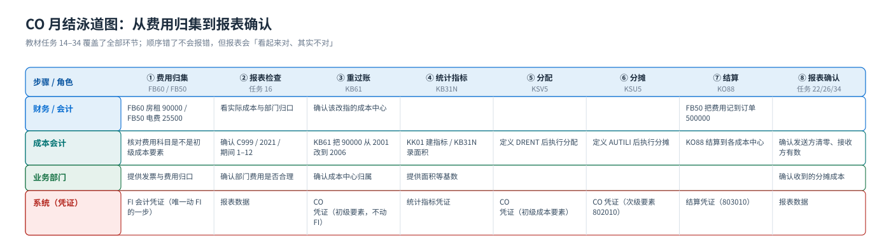
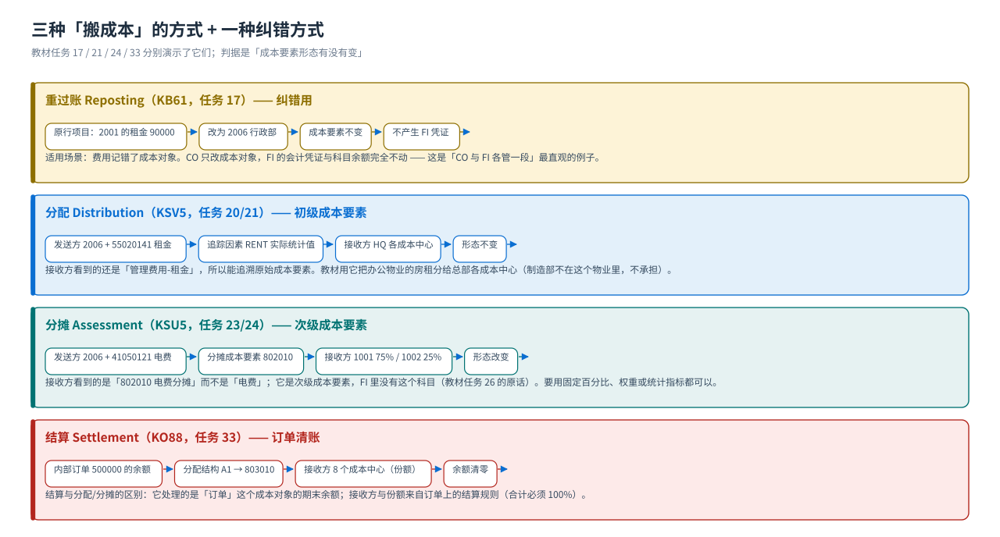

成本流（端到端）
费用归集 → 重过账 → 分配 → 分摊 → 结算 → 报表：泳道图与每月月结顺序
CO 的成本流（教材的任务 14–34 就是它）：费用先归集到成本中心或内部订单 → 记错的用重过账改指 → 录好统计指标作基数 → 分配（初级成本要素）与分摊（次级成本要素）把费用分给接收方 → 内部订单结算到各成本中心 → 报表上看结果。看这张泳道图时只盯两件事：每一步谁在动、这一步的成本形态变没变。
月结泳道图：谁在动、动什么
{kind=link}

九步顺序（每一步的 T-code 与产出）
| # | 动作 | T-code（教材任务） | 产生的凭证 / 数据 | 成本形态 | FI 有会计凭证吗 |
|---|---|---|---|---|---|
| 1 | 把费用记到成本中心（房租房费发票） | FB60（任务 14）· FB50（任务 15） | FI 会计凭证 + CO 里的成本行 | 初级成本要素（租金/电费） | 有 |
| 2 | 看成本中心实际/计划/差异报表 | 报表：成本中心：实际/计划/差异（任务 16） | 报表数据（无凭证） | — | — |
| 3 | 记错的成本对象用重过账改指 | KB61（任务 17） | CO 凭证（成本中心 2001 → 2006） | 还是初级成本要素 | 无（不动 FI） |
| 4 | 录入统计指标实际值（面积） | KB31N（任务 19） | 统计指标凭证（RENT = 480 / 520 / … M2） | 数量，不是金额 | 无 |
| 5 | 分配：按统计指标分租金 | KSV5（任务 20 定义 / 21 执行） | CO 凭证（循环 DRENT，发送者 1 / 接受者 6） | 不变（仍是 55020141 管理费用-租金） | 无 |
| 6 | 分摊：按固定百分比分电费 | KSU5（任务 23 定义 / 24-25 执行） | CO 凭证（循环 AUTILI，1001 75% / 1002 25%） | 改变（变成 802010 电费分摊） | 无 |
| 7 | 内部订单归集费用 | FB50（任务 32，行项目填订单 500000） | FI 会计凭证 + 订单上的成本 | 初级成本要素 | 有 |
| 8 | 内部订单结算到各成本中心 | KO88（任务 33） | 结算凭证（分配结构 A1 → 结算成本要素 803010） | 次级成本要素（21 类） | 无 |
| 9 | 回报表看结果 | 成本中心报表（任务 22 / 26 / 34） | 报表数据 | — | — |
一句话记住这九步的分工前四步是准备（钱记进来、基数录进去），中间三步是搬成本（重过账 = 改对象、分配 = 搬初级要素、分摊 = 换成次级要素再搬），最后两步是收口（订单清零、报表出数）。顺序错了不会报错，但报表会「看起来对、其实不对」。
产生什么凭证：CO 凭证 vs FI 凭证
| 事务键 | 管什么 | 教材里的位置 | 什么时候用 |
|---|---|---|---|
FI 会计凭证 BKPF/BSEG | 总账/应付/银行的实际记账 | 任务 14 房租 90000、任务 15 电费 25500、任务 32 订单费用 | 费用第一次进入系统时（唯一会动 FI 的一步） |
CO 凭证 COBK/COEP | 成本对象之间的成本流动 | 任务 17 KB61、任务 21 KSV5、任务 24 KSU5、任务 33 KO88 | 重过账、分配、分摊、结算、作业分配、间接费用分摊 |
统计指标凭证 COSL/COSS | 统计指标数量的输入 | 任务 19 KB31N（RENT 面积） | 每月录入基数时 |
| 结算凭证 | 订单/项目余额结转的凭证（结算成本要素） | 任务 33（订单 500000 → 各成本中心） | 期末结算时；教材提示「无错误，运行已经完成」 |
为什么分配与分摊「不产生会计凭证」
因为它们只在管理会计内部搬运成本：钱已经在 FI 里记过账了，分配/分摊只是回答「这笔钱算在哪个部门的账上」。所以跑完 KSV5/KSU5 后：总账余额不变、成本中心报表变了。
反过来说，如果结算的接收方是「固定总账科目」（接收方类别 G/L），系统就会生成一张 FI 凭证（把成本性质转成财务口径）—— 教材演示的是结算到成本中心（接收方类别 CTR），属于纯 CO 过账。
分配 / 分摊 / 结算：三种「搬成本」的区别
{kind=link}

| 比较项 | 分配 Distribution（KSV5） | 分摊 Assessment（KSU5） | 结算 Settlement（KO88） |
|---|---|---|---|
| 教材任务 | 任务 20 定义 / 21 执行 | 任务 23 定义 / 24、25 执行 | 任务 33 执行 |
| 成本要素 | 只搬初级成本要素（55020141 租金） | 用次级成本要素（802010 电费分摊），可配分配结构做多对一 | 用结算成本要素（803010），来自分配结构 A1 |
| 接收方基数 | 统计指标 RENT 的实际统计值（可按期间） | 固定百分比（1001 75% / 1002 25%）或权重 | 结算规则里的份额（手工百分比，合计必须 100%） |
| 发送方 | 成本中心 2006（带成本要素 55020141） | 成本中心 2006（带成本要素 41050121 电费） | 内部订单 500000（整单余额） |
| 接收方 | 成本中心组 HQ | 成本中心组 MFG（1001 / 1002） | 8 个成本中心（按份额） |
| 发送方最后的样子 | 发送方成本被清空（留一行对冲） | 发送方被次级成本要素清空 | 订单余额清零（结算后订单无余额） |
顺序错误会怎样（教学现场真实会遇到的）
| 做错的事 | 系统的反应 | 正确做法 |
|---|---|---|
| 统计指标还没录，就跑分配 | 分配跑出来是 0（没有基数），或报表上看不到接收方金额 | 先 KB31N 录 RENT 实际值，再 KSV5 |
| 分配循环还没定义就执行 KSV5 | 画面里选不到循环，报「循环不存在」 | 先在「期末结账 → 当前设置 → 定义分配」建循环（任务 20） |
| 期间选错（执行分配的会计期间） | 成本被搬到别的月份，当月报表没变化 | 期间填当月（教材提示原话）；注意凭证日期与期间要一致 |
| 费用记错成本中心又不重过账 | 部门报表失真，分配基数也跟着错 | 用 KB61 重过账改指（任务 17），不要冲销 FI 凭证 |
| 用分摊去搬初级成本要素 | 接收方看到的是「XX 分摊」而看不到原始成本要素，无法追溯 | 要保留原始成本要素用分配；要换形态用分摊 |
| 跳过结算直接关账 | 内部订单上还挂着余额，成本没到最终对象 | 先 KO88 结算（任务 33），再出报表（任务 34） |
| 分配/分摊跑两次 | 成本被重复搬一次，接收方金额翻倍 | 重跑前先看 CO 凭证（KSB1 行项目或循环的执行日志）确认是否跑过 |
教材画面（成本流主线）